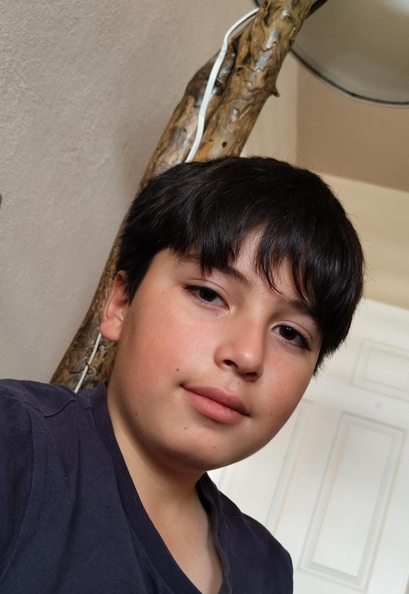

Museos a los que tienes que ir
Museo de ciencias naturales en Ciudad de México
Visité este lugar en octubre de 2018
Ese museo es bastante amplio teniendo varias zonas la primera es de la era prehistorica, en la cual se pueden encontrar varios esqueletos, animales disecados, reliquias, pinturas rupestres en perfecto estado, normalemente los animales y esqueletos son de especies extintas.La segunda esta ambientada en el espacio en esa aréa están los últimos trajes de astronauta, polvo lunar, meteoritos y los últimos robots exploradores. Luego esta la tercera zona la cual contiene esqueletos de humanos "cavernícolas", una maqueta de Lucy y el ambiente que vivían. la ultima area es de robotica.
La Paz Baja California Sur
Visité este lugar en septiembre del 2022
Es un lugar hermoso ya que no hay agua contaminada en ese lugar aparte de que de las calles o playas estan totalmente limpias sin que hasta cazar animales o pescar esta totalmente prohibido. Cuando entras al agua podrás ver demasiados animales marinos pero hay que tener cuidado ya que cuando caminas en el agua tienes que arrastrar los pies porque que las rayas tienen una cola larga y muy venenosa con un rasguño te puede mandar a urgencias, pero arrastrando los pies se asustan y se van, aparte hay bastantes peces globo para ellos tienes que quedarte quieto si se acercan mucho ya que un movimiento fuerte y digamos que no te gustaria que se infle. Después tiene maravillas de la naturaleza como una piedra de proporciones extrañas que se formó con el agua, aparte de que hay leones marinos, peces flauta, peces espada, peces voladores,etc y la "atraccion principal los tiburones ballena" para poder ver a uno tienes que ir en tiempos de frío te recomiendo que en febrero y enero.
Reseñas de películas

Transmite el miedo de ser atacado por algo que puede destruir tu mundo entero.
Es una historia bien contada desde que aparece Godzilla con su segunda forma en la cual el gobierno se ve incapaz de hacer nada ya que solo destruye todo a su paso incluso cuando descubren una debilidad la bestia crea otra forma la cual puede acabar con mas parte de Japon este ser ya no solo puede golpear con su cabeza ya que podría lanzar rayos atómicos a medias pero cuando pensaban que lo podían asesinar con un tanque encontraron civiles que no habían evacuado y cuando menos se esperaban volvió a evolucionar, y una cara deformada aparecio en su cola y su tono rojo cambio a negro y por las aletas dorsales lanzaban rayos aparte también por su cola y boca, ningún arma le hacía nada EEUU quiso ayudar pero con bombas nucleares pero el gobierno no quería perder su ciudad así que el primer ministro quería ir a un lugar más seguro pero justo Godzilla le lanzo un rayo a su helicoptero y después su rayo atomico, descubrieron que enfriándolo lo podían vencer así que en lo que conseguía fuerzas después de su rayo los investigadores duplicaron la sustancia de enfriamiento y con gruas hicieron que Godzilla lo ingiriera y lo congelara. Pero al final se veia que de la cola estaban creciendo seres humanoides.

una historia existensial
Interestelar es una película ambientada en un mundo donde los humanos han sobreexplotado toda clase de recursos naturales y no hay comida como antes. El objetivo principal del protagonista es buscar entre 3 planetas uno habitable mientras que su hija en el planeta Tierra intenta descifrar un enigma para salvar a la humanidad.
Lista de libros

